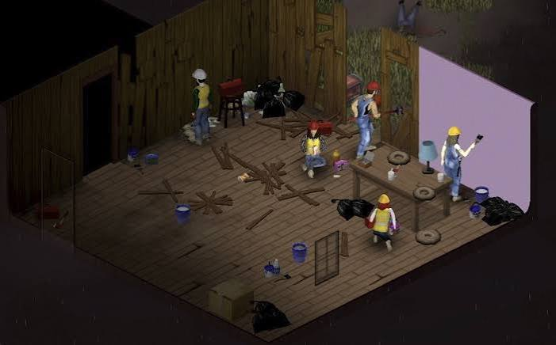
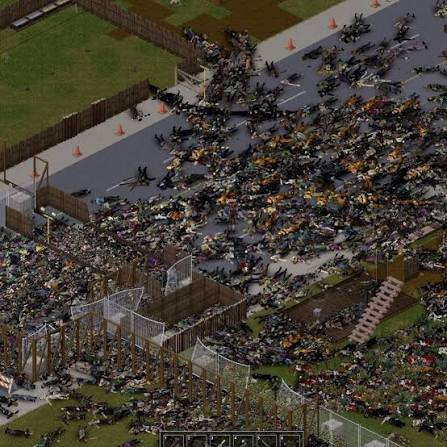
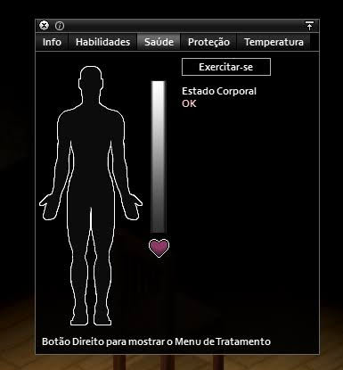

Início › Gameplay
Gameplay
Project Zomboid é um jogo de sobrevivência zumbi isométrico, realista e de mundo aberto. O objetivo não é vencer, e sim ver quanto tempo você consegue durar.

Ciclo principal
- Sobrevivência e saque: você explora casas abandonadas, lojas e armazéns em Knox Country atrás de comida, água, remédios, ferramentas e armas.
- Morte permanente e infecção: a morte é definitiva e apenas uma mordida de zumbi garante o fim do personagem atual.
- Criação de personagem: você escolhe uma profissão e equilibra traços positivos e negativos, que definem suas habilidades iniciais.
- Construção e artesanato: dá para barrar janelas, erguer muros de madeira, plantar, pescar e montar uma base fortificada.
- Progressão de habilidades: ler livros técnicos e praticar ações sobe seus níveis em carpintaria, metalurgia, mecânica, medicina e combate.
- Necessidades básicas: fome, sede, cansaço, frio, calor, estresse e tédio pedem atenção constante ao estado físico e mental.

Combate e furtividade
- Furtividade primeiro: fazer barulho ou usar armas de fogo sem preparo atrai hordas enormes, quase impossíveis de deter.
- Movimentação cautelosa: agachar, fechar as cortinas e vigiar o nível de ruído são essenciais para não ser visto nem ouvido.
- Corpo a corpo: segure o botão direito para mirar, use o esquerdo para atacar com armas brancas e empurre os zumbis para pisoteá-los no chão.

Dificuldade e realismo
O jogo se destaca pelo realismo extremo e por ser punitivo: erros simples geram consequências fatais a longo prazo. A simulação vai muito além de lutar contra monstros e exige controle total sobre o ambiente e o corpo do personagem.
Sobrevivência e ambiente
- Colapso da infraestrutura: depois de algumas semanas, a água encanada e a energia são cortadas para sempre. Resta coletar água da chuva e usar geradores a gasolina.
- Comida que apodrece: alimentos frescos estragam rápido sem refrigeração, então é preciso conservar, plantar ou caçar antes que os estoques acabem.
- Clima e temperatura: o frio do inverno causa hipotermia e o calor do verão causa superaquecimento, afetando velocidade de movimento e saúde.
- Eventos aleatórios: helicópteros militares sobrevoam a área e tiros distantes ecoam pelo mapa, levando hordas inteiras até o seu esconderijo.
Realismo médico e físico
- Ferimentos detalhados: cada parte do corpo sofre danos próprios, como arranhões, lacerações, queimaduras, fraturas e balas alojadas, que pedem curativos esterilizados, talas ou suturas.
- Infecções: feridas sujas causam infecções bacterianas tratáveis, enquanto arranhões e lacerações de zumbis têm chance real de transmitir o vírus fatal.
- Exaustão e peso: carregar equipamento demais reduz a velocidade, aumenta o cansaço e enfraquece os golpes.
- Fome e nutrição: comer só alimentos calóricos engorda e tira resistência, e a falta de nutrientes causa perda de peso e fraqueza.

Psicologia e detalhes do dia a dia
- Saúde mental: ficar trancado em casa gera tédio e depressão, deixando o personagem mais lento em ações como transferir itens ou equipar armas.
- Pânico e estresse: enfrentar vários zumbis causa pânico, que reduz a precisão com armas de fogo e o dano corpo a corpo.
- Manutenção: roupas rasgam e precisam de remendo, armas quebram com o uso e carros exigem peças e combustível.
- Visão limitada: o personagem só enxerga dentro do cone frontal, então é fácil ser surpreendido por trás ou ao abrir portas.